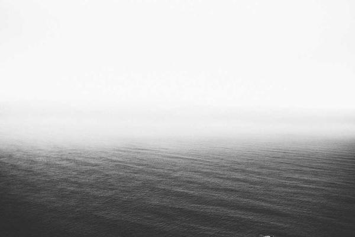

Campamento Suyai
Actividad en Villa Mascardi, a 31 km de Bariloche (Lote 80).

“ En 1961 comenzaron las excursiones a Bariloche con fines recreativos. Durante los años siguientes, se repitieron los viajes, pero tras un clima que no fue favorable surgió la idea de adquirir un terreno permanente para edificar y tener donde cocinar y comer, guarecidos de la lluvia. Las gestiones ante Parques Nacionales fueron intensas y porfiadas, hasta que afortunadamente, por Res. 01886 otorgada el 16 de septiembre de 1964, se asignó a la escuela el lote N° 80 de la Villa Mascardi, de 109 x 390 m., con fines de utilidad pública y con un plazo de edificar en el término de 3 años. El campamento cuenta hoy día con dormitorios, cocina, cabañas, un amplio comedor, despensa, sanitarios, sala de ducha y una oficina de enfermería. La instalación también cuenta con un suministro de energía eléctrica y calefacción a gas. Así surgió lo que hoy conocemos como "Campamento Suyai", que en lengua araucana significa "esperanza". Se ha contabilizado que hasta el año 2000 aproximadamente han concurrido al campamento unos 6415 alumnos en 118 grupos de verano y 36 de invierno. ”